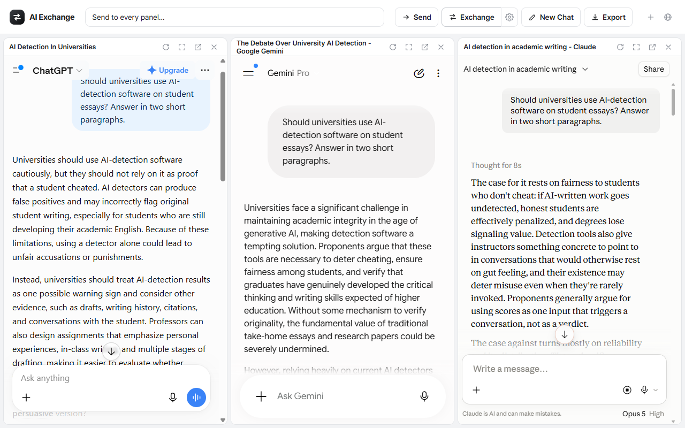
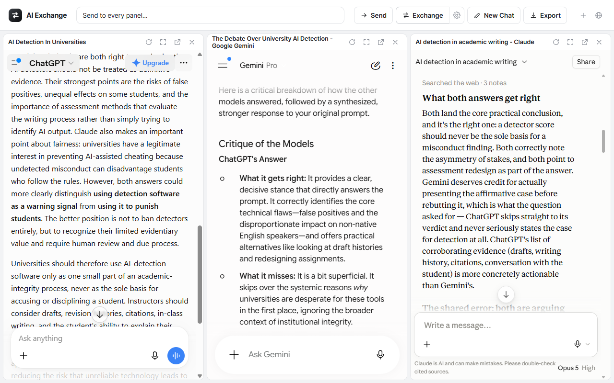

Chrome extension · Multi-model
Put the chat services beside each other,
then let them argue.
AI Exchange opens ChatGPT, Gemini, Claude and Grok as panels in a single page. One click hands each panel's latest answer to the others, wrapped in a prompt that asks them to check it rather than agree with it.
Free · Chrome · You stay signed in to each service the normal way. No API keys, no account, no server.

One question, three answers, one tab.
One click, and they read each other.
Exchange reads every open panel's latest answer and fills it into the others, each answer labelled with the model it came from. What comes back is not three summaries of the same thing but three critiques, and the disagreements are where the useful part usually is.
One press: every panel is filled with the others' answers, and only then does anything send.

The real thing: Gemini critiquing ChatGPT, Claude weighing both, ChatGPT answering back.
The rest of it.
Everything here works on the panels you already have open, in the sessions you are already signed in to.
All or nothing
Every panel is filled first, and only if all of them succeeded does anything get sent. A panel that fails is named, so you know which one and at which step.
Broadcast
Type once in the header and send the same prompt to every open panel, instead of pasting it four times.
Export
Save the conversation as a Markdown file, either the full history of every panel or just the latest answers.
Your prompt
The exchange prompt is a template you can edit, and auto-send can be turned off if you would rather read what was filled in before it goes.
Panels, arranged
Drag a panel by its bar to reorder it and the arrangement is remembered. Open one in its own tab, reload it, or make it fullscreen.
Twelve languages
The interface switches without reloading, so a panel's scroll position, half-typed prompt and streaming answer all survive the change.
Your conversations stay in your browser.
This is a design property, not a promise about how the data is handled somewhere else. There is no somewhere else.
What the extension does not do
- No server of its own, so there is nowhere for it to send anything.
- No analytics, no telemetry, no account, no API key.
- Access to four sites only: chatgpt.com, gemini.google.com, claude.ai, grok.com.
It stores three things in your browser: which panels you have open and in what order, your interface language, and your exchange prompt.
Install it in a minute.
The Chrome Web Store listing is submitted and in review. Until it is live, install the same extension by hand. It is the same package, and nothing about it changes once the store version lands.
- Download the .zip above and unzip it. You get an
ai-exchangefolder. - Open
chrome://extensionsand turn on Developer mode (top-right toggle). - Click Load unpacked and pick the folder that has
manifest.jsondirectly inside it. Windows extracts into a folder named after the zip, so you may end up withai-exchangeinside anotherai-exchange; the inner one is the one to pick. - Pin the icon and click it. The hub opens with the panels, and you sign in to each service there the way you normally would.
Two things to expect
Chrome asks whether to disable developer-mode extensions each time it starts. That prompt is Chrome's blanket warning about extensions loaded this way rather than anything about this one, and it stops once you install from the store listing instead.
Nothing else about your setup changes. There is no account to make and no API key to paste, and the extension reaches four sites: chatgpt.com, gemini.google.com, claude.ai and grok.com.
Questions or a bug to report: kisoolabs@gmail.com